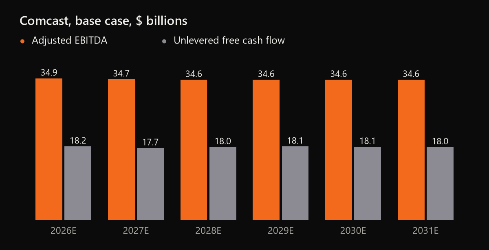
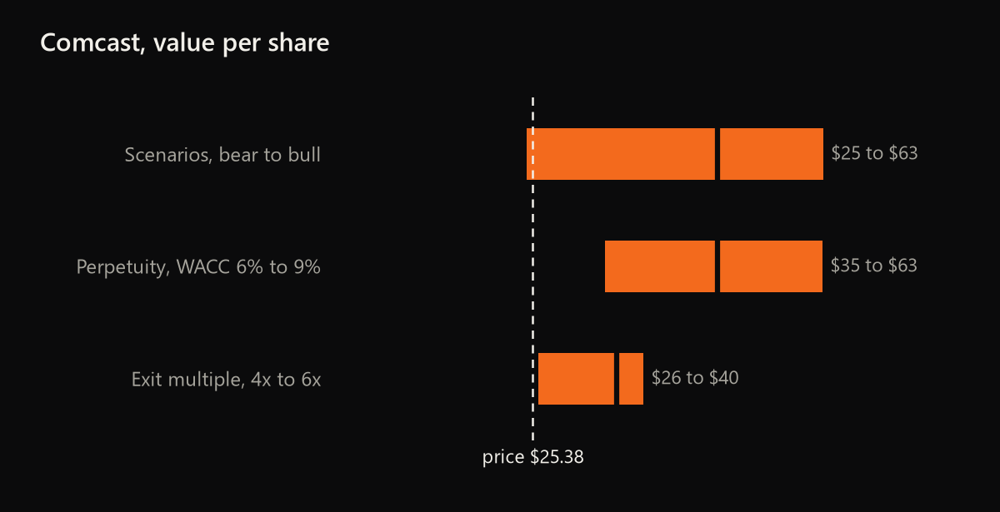

Comcast DCF model.

The one company the model cannot reconcile with its price.
In short
- The question
- Why does the market pay 4.9 times EBITDA for Comcast?
- Data and method
- 2026 annualized from nine months, two revenue lines, a 7.5 percent WACC and a hard bear case.
- What I found
- $49.05 and $36.13 a share, against $25.38. The price implies cash flow falling 5.1 percent a year forever.
- What it means
- Nearly half the capital is debt, so each point of WACC is worth $8 to $15 a share.
The numbers
Perpetuity method, base case. The price is $25.38.
Exit multiple at 5.5 times 2031 EBITDA.
Perpetual decline in cash flow the price implies.
Exit multiple the price implies. The market pays 4.9 today.
The WACC, lowest of the five. Nearly half the capital is debt.
Share of value after 2031.
These are model outputs under stated assumptions. Nothing on this page is a recommendation to buy or sell anything.
In pictures

Base case EBITDA and free cash flowAbout $18 billion of unlevered cash flow a year. 
Where the answers landAlmost every range starts above the price. It does not make me trust the model more.


Why this company
Comcast resembles what Skydance might look like after a decade, with cable, a studio, parks, a streaming service that has just turned profitable and 2.3 times leverage. It spun off its cable networks in January 2026 and will spin NBCUniversal and Sky in mid 2027, so it is becoming a broadband utility.
I value it as it is today, before the spin, on nine months of 2026 actuals. That is the only basis the filings support.
How it is built
- Base year. 2026 as now reported, without Versant and from the second quarter without Sky Deutschland. Nine months of $90.7 billion of revenue and $25.9 billion of adjusted EBITDA, annualized to $120.5 billion and $35 billion.
- Revenue. Two lines. Connectivity and Platforms, $79 billion, falls 1 percent a year then flattens as price offsets broadband losses. Content and Experiences, $41.5 billion net of eliminations, grows 2 percent.
- EBITDA. Margin 29 percent drifting down to 28. My own estimates of separation costs are $500 million in 2026, $800 million in 2027 and $300 million in 2028.
- Cash flow. Capex 9.5 percent of revenue. Depreciation of $16 billion a year shelters a lot of the profit from cash tax. That is a big reason cable cash flow is high relative to EBITDA.
- Discount rate. Unlevered beta 0.7, 0.9 debt to equity, levered beta 1.18, cost of equity 10.2 percent, cost of debt 5.9 percent. Market weights give 7.5 percent.
- Equity bridge. $87.4 billion of debt, $7.6 billion of cash, 3,551 million shares from the October 15 cover.
What I got wrong first
The first build gave $60 a share. When a model is that far from the price of a $78 billion company, the first thing to check is the model. I raised the beta, cut growth to 0.5 percent, cut the exit multiple to 5.5, put the cost of debt at 95 bp over Treasuries and ran the bear case harder. It still landed at $35 to $44 in October, and at $36 to $49 now that stock compensation comes out once. So I am not saying Comcast is cheap. I am showing what the price assumes, a decline of 5 percent a year forever, and leaving the reader to decide whether broadband and parks will do that.
What would change the answer
- The discount rate. Each point of WACC is worth $8 to $15 a share on the perpetuity method. If the spin leaves the broadband company with a higher cost of debt, the value would change quickly.
- Broadband losses. Comcast is losing subscribers to fixed wireless and fiber. The bear case runs connectivity down 3 percent a year. The price implies a steeper decline.
- The spin itself. A sum of the parts after mid 2027 is a different model with two balance sheets, and the S-4 or Form 10 is the document to build it from.
- Theme parks. Segment EBITDA fell 17 percent in the third quarter of 2026 on a tough Epic Universe comparison. I grow the segment 2 percent, which may be generous.
Since the model
- The price. $25.38 on November 24, up from $22.04 and still below both methods.
- One correction. Comcast reports EBITDA after stock compensation and I took it out again. That was worth about $5 a share.
- The spin. The 10-Q still says mid 2027. Comcast can keep up to 19.9 percent for up to a year.
- Ratings. Moody's and S&P put the company on review in June. I have not found either result.
The model
Download the Excel model · Back to the five
Blue cells are inputs. Pick a scenario in Inputs cell C5. The 2026 base year is annualized from nine months and marked that way. Nothing in the model comes from a Bloomberg Terminal or from any employer.